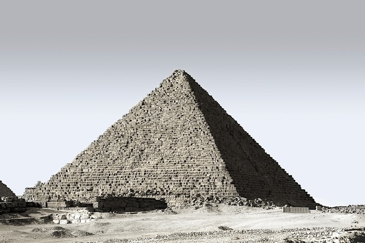

스카이캐슬 18화 마지막 장면, 여기서 사용된 노래는 슈베르트의 마왕이라는 곡이 나옵니다.
나는 반성합니다.가부장적 아버지에게서 벗어나고 싶다는 마음만으로 제대로 얘기도 안 나눠보고 결혼한 제 자신을 반성합니다.고쳐쓰는게 아니라는 사람에 대한 일말의 희망 때문에 아이들에게 모욕적인 언행을 방관한 저를 반성합니다 
이 가족은 신스틸러 역할이자, 활화산같은 차교수와 휴화산이지만 곧 터질거 같은 노승혜의 저 깊은 무의식 속 마그마작용을 내내 보여주었기에 차세리 사건 때부터 숨죽이며 지켜본 패밀리예요.결국 이혼 이라는 종착역으로 가는듯한 모습인데요. 답답한 건 정말 바뀌지 않는 차교수! 인생을 피라미드로 비유하는 그 속물근성!